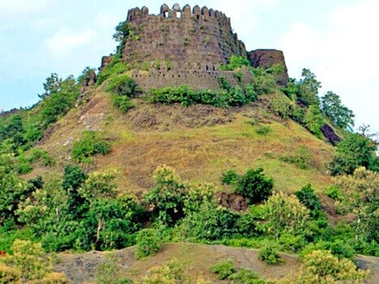
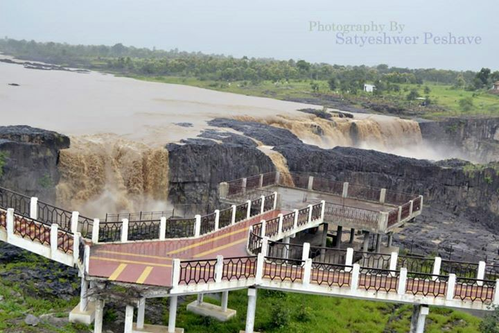
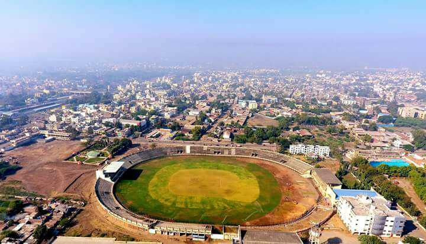
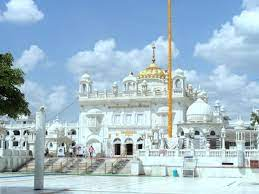
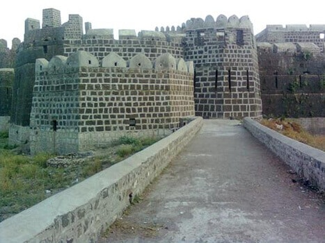

Walchand College of Engineering, Sangli
Department of Computer Science and Engineering
Nanded


'
MAJOR ATTRACTIONS
- SAHASTRAKUND
It is an excellent waterfall on the Penganga River, a tributary of the Godavari River at Murli village. The rock pattern in the surroundings of the falls is fascinating, as the black rock gives a metal like an effect. There is a bridge across the river a little further away from the falls (1 km). Sometimes the road to the bridge becomes inaccessible for four-wheelers, but it can be walked down (20 mins one way). Visited throughout the year, the waterfalls make an amazing tourist spot.
- SACHKHAND SRI HAZUR SAHIB
According to Sikh history, it’s from here that the tenth Guru, Guru Gobind Singh Ji, left for his heavenly abode. A Gurudwara was built here in 1837 by the great Sikh ruler Maharaja Ranjit Singh. Today, Hazur Sahib stands as a soul to the city of Nanded. The Gurudwara is considered to be one of the holiest of the five “Takhts“ or the seat of authority in the Sikh religion. An architectural beauty, the sprawling temple area is made of white marble, with decorated floors and a dome adorned with gold. Other important Gurudwaras situated in and around Nanded are Bandaghat Langar Sahib, Mata Sahib Dewa, Maltekri Sahib, Naginaghat Nanak Puri, Shikar Ghat Gurudwaras and Sangat Sahib.
 - NANDED FORT
A place set aloof, away from the city hustle-bustle, Nanded Fort, in the state Maharashtra, is one of the most popular tourist attractions. The fort, now in ruins, is bordered by Godavari River and offers an impressive picturesque view of the area. There are plenty of vast agricultural lands near the fort, lending an untouched look to it. There are ample lodging spaces available nearby, clean and decently priced. What makes the enormous beauty of the place even more delightful is the wonderful hospitality of people living here. Nanded Fort is a total delight for history buffs, architecture enthusiasts, and photography fanatics. 